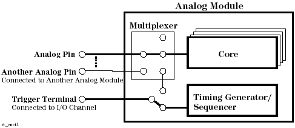
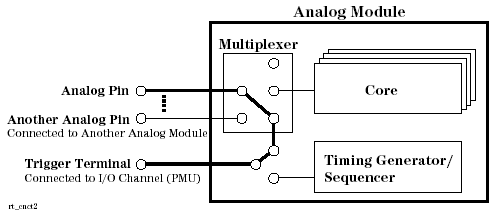
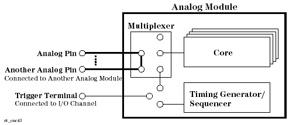

Setting up Routing
The command has a task parameter to define the task executed on activating the routing set and the task_param parameter to define the parameters for the specified task, such as below.
set# statement# analog pin | | | DFRT 1,4,ANA_CNCT,"DIFF,CORE",,(Vout2) | | task task_param
Available tasks are as follows:
ANA_CNCT: |
Connects the analog pin to the specified resource. |
FLSH: |
Executes the buffered routing statements beforehand. The statement number and the "FLSH" task, are described later in this section. |
NOP: |
No operation. You can use this task to cancel a statement in the buffered routing statements beforehand. |
UTIL |
Sets the state of the specified utility lines. |
For the "ANA_CNCT" task, you must set the signal mode and the connection destination for the specified analog pin, in the task_param parameter.
You can select one of the following signal modes:
SGL: |
Single-ended signal mode |
DIFF: |
Differential signal mode |
OFF: |
Disconnects the analog pin from any resource. |
You can select one of the following connection destinations:
CORE: |
Connects the analog pin to the appropriate core of the analog module for making a signal path for analog waveform measurement or generation. |

TRIG: |
Connect the analog pin to the trigger terminal of the analog module for making a signal path for DC testing of the analog pin. |

EXT: Connect the analog pin to the other input/output terminal of the analog module so as to make a loopback path for connecting to another analog module.

Also, each routing statement in a routing set has a statement number. When the routing set is activated by the ACRS command, the routing statements will be executed in parallel regardless of the statement numbers. However, if any routing statements are "FLSH" tasks, the routing statements will be executed as follows:
- The first routing statement (statement number 1) up to the statement prior to the first "FLSH" task will be executed in parallel by the first "FLSH" task.
- The next statement of the "FLSH" task up to the statement prior to the next "FLSH" task will be executed in parallel by the second "FLSH" task.
- The subsequent sequence will also be executed.
- The next statement of the last "FLSH" task up to the last statement will be executed in parallel. A "FLSH" task is automatically executed after the last statement. Hence, you must not set the "FLSH" task at the end of the routing sequence.
In fact, the "FLSH" task reads the buffered setting data in the current readiness analog set, and routing setting data in the primary routing set and as defined by the ACMD "CNCT" command from the MCD, checks the combination of the settings, and downloads the contents of the readiness analog set and buffered routing settings to the hardware accordingly.
When setting up the routing set, take account of the above execution order of the routing statements. For more information on the execution order and the activation of the routing set, see Defining and Activating Primary Set.